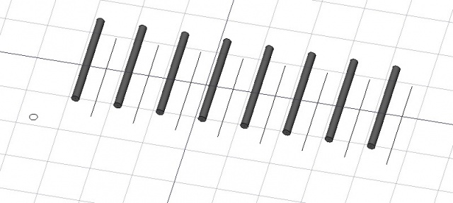

Arch Frame
|
| Emplacement du menu
|
| Arch → Frame
|
| Ateliers
|
| Arch
|
| Raccourci par défaut
|
| F R
|
| Voir aussi
|
| Aucun
|
|
Description
L'outil Frame sert à construire toutes sortes d'objets basés sur un profil et une mise en page. Le profil est extrudé sur les bords de la mise en page, qui peut être n'importe quel objet 2D comme une esquisse ou un objet draft. Il est particulièrement utile pour créer des rampes ou des murs. les objets Frame peuvent alors facilement être transformés en murs ou en objets structurels.

Dans l'image ci-dessus, une ligne a été transformée en un tableau, et un tableau d'objet est construit avec le profil d'un cercle.
Utilisation
- Créer une mise en page d'un objet et le profil d'un objet, par exemple avec le Draft Workbench ou le Sketcher Workbench
- Sélectionnez le premier objet à mettre en page, puis, maintenez la touche CTRL enfoncée, et sélectionnez l'objet à profiler
- Cliquez sur le bouton Arch Frame ou appuyez sur le bouton Arch Frame et sur la touche R
Options
- Les frames (cadres) partagent les propriétés et comportements communs de tous les objets Arch Composants
- L'objet frame peut être placé à une certaine distance de l'objet mis en page, en définissant sa propriété Offset
- Le profil sera copié à la base de chaque côté de l'objet mis en page, puis extrudé sur lui. Vous pouvez contrôler la façon dont le profil est placé à la base de chaque arête avec les propriétés Align et Rotation.
Propriétés
- DONNÉESBase: La mise en page de base sur on.
- DONNÉESProfile: Le profil de cette image base sur on.
- DONNÉESAlign: Spécifie que la rotation du profil soit aligné sur axe normal de chaque bord.
- DONNÉESOffset: Une option de distance entre l'objet de mise page et l'objet frame.
- DONNÉESRotation: La rotation du profil autour de l'axe d'extrusion.
Script
L'outil Frame peut être utilisé dans une macro et dans la console python en utilisant la fonction suivante :
makeFrame ( layout,profile )
- Crée un objet frame d'un croquis (ou tout autre objet contenant des wires (fils)) et un objet profil (fils d'un objet 2D extrudable contenant des faces ou fils fermés)
- Retourne le nouvel objet frame, ou None si l'opération a échoué.
Exemple:
import Draft, Arch
layout = Draft.makeLine(FreeCAD.Vector(0,0,0),FreeCAD.Vector(2,0,0))
profile = Draft.makeCircle(.2)
Arch.makeFrame(layout,profile)
{kind=link}
{kind=link}